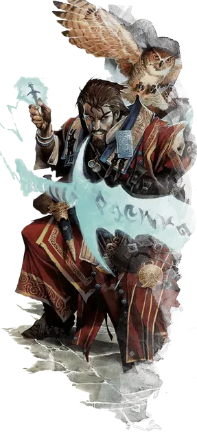

Меч Морденкайнена
Mordenkainen’s Sword
7 уровень, Воплощение

Время сотворения Действие
Дистанция 90 футов
Компоненты В, С, М (миниатюрный меч стоимостью не менее 250 ЗМ)
Длительность Концентрация, вплоть до 1 минуты
Вы создаёте призрачный меч, парящий в точке в пределах дистанции. Он существует, пока действует заклинание.
Когда меч появляется, совершите рукопашную атаку заклинанием по цели в пределах 5 футов от него; при попадании цель получает Силовой урон, равный 4к12 + ваш модификатор заклинательной характеристики.
В ваши последующие ходы вы можете Бонусным действием переместить меч на расстояние вплоть до 30 футов в видимую вами точку и снова совершить такую атаку, по той же цели или по другой.